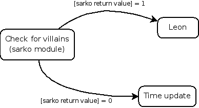

OAR Documentation - Admin Guide
| Authors: | Capit Nicolas, Emeras Joseph |
|---|---|
| Address: | Laboratoire d'Informatique de Grenoble Bat. ENSIMAG - antenne de Montbonnot ZIRST 51, avenue Jean Kuntzmann 38330 MONTBONNOT SAINT MARTIN |
| Contact: | nicolas.capit@imag.fr, joseph.emeras@imag.fr |
| Authors: | LIG laboratory |
| Organization: | LIG laboratory |
| Status: | Stable |
| Copyright: | licenced under the GNU GENERAL PUBLIC LICENSE |
| Dedication: | For administrators. |
| Abstract: | OAR is a resource manager (or batch scheduler) for large clusters. By it's functionnalities, it's near of PBS, LSF, CCS and Condor. It's suitable for productive plateforms and research experiments. |
|---|
BE CAREFULL : THIS DOCUMENTATION IS FOR OAR >= 2.3.0
PDF version : OAR-DOCUMENTATION.pdf
- 1 OAR capabilities
- 2 Installing the OAR batch system
- 3 Security aspects in OAR
- 4 Administrator commands
- 4.1 oarproperty
- 4.2 oarnodesetting
- 4.3 oarremoveresource
- 4.4 oaraccounting
- 4.5 oarnotify
- 4.6 oarmonitor
- 4.7 Database scheme
- 4.7.1 accounting
- 4.7.2 admission_rules
- 4.7.3 event_logs
- 4.7.4 event_log_hostnames
- 4.7.5 files
- 4.7.6 frag_jobs
- 4.7.7 gantt_jobs_resources
- 4.7.8 gantt_jobs_resources_visu
- 4.7.9 gantt_jobs_predictions
- 4.7.10 gantt_jobs_predictions_visu
- 4.7.11 jobs
- 4.7.12 job_dependencies
- 4.7.13 moldable_job_descriptions
- 4.7.14 job_resource_groups
- 4.7.15 job_resource_descriptions
- 4.7.16 job_state_logs
- 4.7.17 job_types
- 4.7.18 resources
- 4.7.19 resource_logs
- 4.7.20 assigned_resources
- 4.7.21 queues
- 4.7.22 challenges
- 5 Configuration file
- 6 Modules descriptions
- 7 FAQ - ADMIN
- 7.1 Release policy
- 7.2 What means the error "Bad configuration option: PermitLocalCommand" when I am using oarsh?
- 7.3 How to manage start/stop of the nodes?
- 7.4 How can I manage scheduling queues?
- 7.5 How can I handle licence tokens?
- 7.6 How can I handle multiple clusters with one OAR?
- 7.7 How to configure a more ecological cluster (or how to make some power consumption economies)?
- 7.8 How to enable jobs to connect to the frontales from the nodes using oarsh?
- 7.9 A job remains in the "Finishing" state, what can I do?
- 7.10 How can I write my own scheduler?
- 7.11 What is the syntax of this documentation?
- 8 OAR CHANGELOG
- 8.1 upstream development version:
- 8.2 version 2.2.11:
- 8.3 version 2.2.10:
- 8.4 version 2.2.9:
- 8.5 version 2.2.8:
- 8.6 version 2.2.7:
- 8.7 version 2.2.6:
- 8.8 version 2.2.5:
- 8.9 version 2.2.4:
- 8.10 version 2.2.3:
- 8.11 version 2.2.2:
- 8.12 version 2.2.1:
- 8.13 version 2.2:
- 8.14 version 2.1.0:
- 8.15 version 2.0.2:
- 8.16 version 2.0.0:
1 OAR capabilities
Oar is an opensource batch scheduler which provides a simple and flexible exploitation of a cluster.
It manages resources of clusters as a traditional batch scheduler (as PBS / Torque / LSF / SGE). In other words, it doesn't execute your job on the resources but manages them (reservation, acces granting) in order to allow you to connect these resources and use them.
- Its design is based on high level tools:
- relational database engine MySQL or PostgreSQL,
- scripting language Perl,
- confinement system mechanism cpuset,
- scalable exploiting tool Taktuk.
It is flexible enough to be suitable for production clusters and research experiments. It currently manages over than 5000 nodes and has executed more than 5 million jobs.
- OAR advantages:
- No specific daemon on nodes.
- No dependence on specific computing libraries like MPI. We support all sort of parallel user applications.
- Upgrades are made on the servers, nothing to do on computing nodes.
- CPUSET (2.6 linux kernel) integration which restricts the jobs on assigned resources (also useful to clean completely a job, even parallel jobs).
- All administration tasks are performed with the taktuk command (a large scale remote execution deployment): http://taktuk.gforge.inria.fr/.
- Hierarchical resource requests (handle heterogeneous clusters).
- Gantt scheduling (so you can visualize the internal scheduler decisions).
- Full or partial time-sharing.
- Checkpoint/resubmit.
- Licences servers management support.
- Best effort jobs : if another job wants the same resources then it is deleted automatically (useful to execute programs like SETI@home).
- Environment deployment support (Kadeploy): http://kadeploy.imag.fr/.
- Other more common features:
- Batch and Interactive jobs.
- Admission rules.
- Walltime.
- Multi-schedulers support.
- Multi-queues with priority.
- Backfilling.
- First-Fit Scheduler.
- Reservation.
- Support of moldable tasks.
- Check compute nodes.
- Epilogue/Prologue scripts.
- Support of dynamic nodes.
- Logging/Accounting.
- Suspend/resume jobs.
2 Installing the OAR batch system
- What do you need?
- a cluster
- to be an admin of this cluster
- to get the install package of OAR (normally you have already done that)
2.1 Requirements
There a three kinds of nodes, each requiring a specific software configuration.
These are :
- the server node, which will hold all of OAR "smartness" ;
- the login nodes, on which you will be allowed to login, then reserve some computational nodes ;
- the computational nodes (a.k.a. the nodes), on which the jobs will run.
On every nodes (server, login, computational), the following packages must be installed :
- Perl
- Perl-base
- openssh (server and client)
On the OAR server and on the login nodes, the following packages must be installed:
- Perl-Mysql | Perl-PostgreSQL
- Perl-DBI
- MySQL | PostgreSQL
- libmysql | libpostgres
From now on, we will suppose all the packages are correctly installed and configured and the database is started.
2.2 Configuration of the cluster
The following steps have to be done, prior to installing OAR:
add a user named "oar" in the group "oar" on every node
let the user "oar" connect through ssh from any node to any node WITHOUT password. To achieve this, here is some standard procedure for OpenSSH:
create a set of ssh keys for the user "oar" with ssh-keygen (for instance 'id_dsa.pub' and 'id_dsa')
copy these keys on each node of the cluster in the ".ssh" folder of the user "oar"
append the contents of 'id_dsa.pub' to the file "~/.ssh/authorized_keys"
in "~/.ssh/config" add the lines:
Host * ForwardX11 no StrictHostKeyChecking no PasswordAuthentication no AddressFamily inettest the ssh connection between (every) two nodes : there should not be any prompt.
There are three different flavors of installation :
server: install the daemon which must be running on the server
user: install all the tools needed to submit and manage jobs for the users (oarsub, oarstat, oarnodes, ...)
node: install the tools for a computing node (verify that the command "oardodo" is in the PATH of the oar user on each nodes. For example you have to add:
export PATH=/usr/local/oar/oardodo:$PATHinto ~/.bashrc and ~/.bash_profile of oar user. You have also to check in ~oar/.ssh/authorized_keys that the oar user ssh key is prefixed by "environment="OAR_KEY=1", see Important notes)
The installation is straightforward:
become root
go to OAR source repository
You can set Makefile variables in the command line to suit your configuration (change "OARHOMEDIR" to the home of your user oar and "PREFIX" where you want to copy all OAR files).
- run make <module> [module] ...
- where module := { server-install | user-install | node-install | doc-install | debian-package }
OPTIONS := { OARHOMEDIR | OARCONFDIR | OARUSER | PREFIX | MANDIR | OARDIR | BINDIR | SBINDIR | DOCDIR }
Edit /etc/oar/oar.conf file to match your cluster configuration.
Make sure that the PATH environment variable contains $PREFIX/$BINDIR of your installation (default is /usr/local/bin).
Initialization of OAR database (MySQL) is achieved using oar_mysql_db_init script provided with the server module installation and located in $PREFIX/sbin (/usr/local/sbin in default Makefile).
If you want to use a postgres SQL server then you can call the init_pg_server.pl script that will do all the users and tables creation for you. If you want to do this by yourself, you have to add a new user which can connect on a new oar database (use the commands createdb and createuser). After that, you have to authorize network connections on the postgresql server in the postgresql.conf (uncomment tcpip_socket = true). Then you can import the database scheme stored in oar_postgres.sql (use psql and the SQL command "\i").
Here is an example to perform all the potgres database install(there is certainly other ways to do that):
sudo su - postgres
createuser -P
Enter name of role to add: oar
Enter password for new role:
Enter it again:
Shall the new role be a superuser? (y/n) n
Shall the new role be allowed to create databases? (y/n) n
Shall the new role be allowed to create more new roles? (y/n) n
CREATE ROLE
createuser -P
Enter name of role to add: oar_ro
Enter password for new role:
Enter it again:
Shall the new role be a superuser? (y/n) n
Shall the new role be allowed to create databases? (y/n) n
Shall the new
createdb oar
sudo vi /etc/postgresql/8.1/main/pg_hba.conf
host oar oar_ro 127.0.0.1 255.255.255.255 md5
host oar oar 127.0.0.1 255.255.255.255 md5
sudo /etc/init.d/postgresql-8.1 reload
psql -Uoar -h127.0.0.1 oar
\i /usr/lib/oar/oar_postgres.sql
\q
psql oar
GRANT ALL PRIVILEGES ON accounting,admission_rules,assigned_resources,
challenges,event_log_hostnames,event_logs,files,frag_jobs,gantt_jobs_predictions,
gantt_jobs_predictions_visu,gantt_jobs_resources,gantt_jobs_resources_visu,
job_dependencies,job_resource_descriptions,job_resource_groups,
job_state_logs,job_types,jobs,moldable_job_descriptions,queues,
resource_logs,resources,admission_rules_id_seq,event_logs_event_id_seq,
files_file_id_seq,job_resource_groups_res_group_id_seq,
job_state_logs_job_state_log_id_seq,job_types_job_type_id_seq,
moldable_job_descriptions_moldable_id_seq,resource_logs_resource_log_id_seq,
resources_resource_id_seq,jobs_job_id_seq TO oar;
GRANT SELECT ON accounting,admission_rules,assigned_resources,event_log_hostnames,
event_logs,files,frag_jobs,gantt_jobs_predictions,gantt_jobs_predictions_visu,
gantt_jobs_resources,gantt_jobs_resources_visu,job_dependencies,
job_resource_descriptions,job_resource_groups,job_state_logs,job_types,
jobs,moldable_job_descriptions,queues,resource_logs,resources,admission_rules_id_seq,
event_logs_event_id_seq,files_file_id_seq,job_resource_groups_res_group_id_seq,
job_state_logs_job_state_log_id_seq,job_types_job_type_id_seq,
moldable_job_descriptions_moldable_id_seq,resource_logs_resource_log_id_seq,
resources_resource_id_seq,jobs_job_id_seq TO oar_ro;
\q
# You can test it with
psql oar oar_ro -h127.0.0.1
For more information about postgresql, go to http://www.postgresql.org/.
Security issue: For security reasons it is hardly recommended to configure a read only account for the OAR database (like the above example). Thus you will be able to add this data in DB_BASE_LOGIN_RO and DB_BASE_PASSWD_RO in oar.conf.
Note: The same machine may host several or even all modules.
Note about X11: The easiest and scalable way to use X11 application on cluster nodes is to open X11 ports and set the right DISPLAY environment variable by hand. Otherwise users can use X11 forwarding via ssh to access cluster frontal. After that you must configure ssh server on this frontal with
X11Forwarding yes X11UseLocalhost no
With this configuration, users can launch X11 applications after a 'oarsub -I' on the given node.
2.2.1 CPUSET installation
2.2.1.1 What are "oarsh" and "oarsh_shell" scripts?
"oarsh" and "oarsh_shell" are two scripts that can restrict user processes to stay in the same cpuset on all nodes.
This feature is very usefull to restrict processor consumption on multiprocessors computers and to kill all processes of a same OAR job on several nodes.
If you want to configure this feature into OAR then take a look also in CPUSET and resources.
2.2.1.2 CPUSET definition
CPUSET is a module integrated in the Linux kernel since 2.6.x. In the kernel documentation, you can read:
Cpusets provide a mechanism for assigning a set of CPUs and Memory Nodes to a set of tasks. Cpusets constrain the CPU and Memory placement of tasks to only the resources within a tasks current cpuset. They form a nested hierarchy visible in a virtual file system. These are the essential hooks, beyond what is already present, required to manage dynamic job placement on large systems. Each task has a pointer to a cpuset. Multiple tasks may reference the same cpuset. Requests by a task, using the sched_setaffinity(2) system call to include CPUs in its CPU affinity mask, and using the mbind(2) and set_mempolicy(2) system calls to include Memory Nodes in its memory policy, are both filtered through that tasks cpuset, filtering out any CPUs or Memory Nodes not in that cpuset. The scheduler will not schedule a task on a CPU that is not allowed in its cpus_allowed vector, and the kernel page allocator will not allocate a page on a node that is not allowed in the requesting tasks mems_allowed vector. If a cpuset is cpu or mem exclusive, no other cpuset, other than a direct ancestor or descendent, may share any of the same CPUs or Memory Nodes. A cpuset that is cpu exclusive has a sched domain associated with it. The sched domain consists of all cpus in the current cpuset that are not part of any exclusive child cpusets. This ensures that the scheduler load balacing code only balances against the cpus that are in the sched domain as defined above and not all of the cpus in the system. This removes any overhead due to load balancing code trying to pull tasks outside of the cpu exclusive cpuset only to be prevented by the tasks' cpus_allowed mask. A cpuset that is mem_exclusive restricts kernel allocations for page, buffer and other data commonly shared by the kernel across multiple users. All cpusets, whether mem_exclusive or not, restrict allocations of memory for user space. This enables configuring a system so that several independent jobs can share common kernel data, such as file system pages, while isolating each jobs user allocation in its own cpuset. To do this, construct a large mem_exclusive cpuset to hold all the jobs, and construct child, non-mem_exclusive cpusets for each individual job. Only a small amount of typical kernel memory, such as requests from interrupt handlers, is allowed to be taken outside even a mem_exclusive cpuset. User level code may create and destroy cpusets by name in the cpuset virtual file system, manage the attributes and permissions of these cpusets and which CPUs and Memory Nodes are assigned to each cpuset, specify and query to which cpuset a task is assigned, and list the task pids assigned to a cpuset.
2.2.1.3 OARSH
"oarsh" is a wrapper around the "ssh" command (tested with openSSH). Its goal is to propagate two environment variables:
- OAR_CPUSET : The name of the OAR job cpuset
- OAR_JOB_USER : The name of the user corresponding to the job
So "oarsh" must be run by oar and a simple user must run it via the "sudowrapper" script to become oar. In this way each cluster user who can execute "oarsh" via "sudowrapper" can connect himself on each cluster nodes (if oarsh is installed everywhere).
2.2.1.4 OARSH_SHELL
"oarsh_shell" must be the shell of the oar user on each nodes where you want oarsh to work. This script takes "OAR_CPUSET" and "OAR_JOB_USER" environment variables and adds its PID in OAR_CPUSET cpuset. Then it searches user shell and home and executes the right command (like ssh).
2.2.1.5 Important notes
On each node you must add in the SSH server configuration file (you have to install an openssh server with a version >= 3.9):
AcceptEnv OAR_CPUSET OAR_JOB_USER PermitUserEnvironment yes UseLogin no AllowUsers oarIn Debian the file is "/etc/ssh/sshd_config".
AllowUsers restricts the users which can connect directly on the nodes. With cpuset enabled, only the user oar is needed but other logins can be added with this syntax(it is safer):
AllowUsers oar admin1 admin2 ...After that you have to restart the SSH server.
The default oar ssh public key in the authorized_keys file must be tagged for the security. So this prefix must be set in front of the public key:
environment="OAR_KEY=1"So if the oar public key is:
ssh-rsa AAAAB3NzaC1yc2EAAAABIwAAAQEAsatv3+4HjaP91oLdZu68JVvYcHKl/u5avb4b zkc3ut3W6FXz5qZYknDW99/R7VYaaZ+VFG5vt6ZCZvJReyM268p00D00ic4fuDwZADpgZMPW FOGHJM5ga8cTPaczg88XMUx/cVGfnm1LaK5nSrymHZdMsxXrthen it must be switched into:
environment="OAR_KEY=1" ssh-rsa AAAAB3NzaC1yc2EAAAABIwAAAQEAsatv3+4HjaP9 1oLdZu68JVvYcHKl/u5avb4bzkc3ut3W6FXz5qZYknDW99/R7VYaaZ+VFG5vt6ZCZvJReyM2 68p00D00ic4fuDwZADpgZMPWFOGHJM5ga8cTPaczg88XMUx/cVGfnm1LaK5nSrymHZdMsxXrthe command "scp" can be used with oarsh. The syntax is:
scp -S /path/to/oarsh ...If you want to use oarsh from the user frontale, you can. You have to define the environment OAR_JOB_ID and then launch oarsh on a node used by your OAR job. This feature works only where the oarstat command is configured:
OAR_JOB_ID=42 oarsh node12or:
export OAR_JOB_ID=42 oarsh node12This command gives you a shell on the "node12" from the OAR job 42.
You can also copy files with a syntax like:
OAR_JOB_ID=42 scp -S /path/to/oarsh ...You can restrict the use of oarsh with the sudo configuration:
%oarsh ALL=(oar) NOPASSWD: /path/to/oarshHere only users from oarsh group can execute oarsh
You can disable the cpuset security mechanism by setting the OARSH_BYPASS_WHOLE_SECURITY field to 1 in your oar.conf file. WARNING: this is a critical functionality (this is only useful if users want to have a command to connect on every nodes without taking care of their ssh configuration and act like a ssh).
2.3 Visualization tools installation
There are two different tools. One, named Monika, displays the current cluster state with all active and waiting jobs. The other, named drawgantt, displays node occupation in a lapse of time. These tools are CGI scripts and generate HTML pages.
- You can install these in this way:
drawgantt:
- Make sure you installed "ruby", "libdbd-mysql-ruby" or "libdbd-pg-ruby" and "libgd-ruby1.8" packages.
- Copy "drawgantt.cgi" and "drawgantt.conf" in the CGI folder of your web server (ex: /usr/lib/cgi-bin/ for Debian).
- Copy all icons and javascript files in a folder that web server can find them (ex: /var/www/oar/Icons and /var/www/oar/Icons).
- Make sure that these files can be read by the web server user.
- Edit "drawgantt.conf" and change tags to fit your configuration.
Monika:
- The packages "libdbd-mysql-perl" or "libdbd-pg-perl" and "perl-AppConfig" are required.
- Read INSTALL file in the monika repository.
2.4 Debian packages
OAR is also released under Debian packages (or Ubuntu). You can find them at https://gforge.inria.fr/frs/?group_id=125.
If you want to add it as a new source in your /etc/apt/sources.list then add the line:
deb http://oar.imag.fr/download ./
IMPORTANT : if you want to use the cpuset features then you have to install the oar-node package on computing nodes otherwise this is not mandatory. But if this is performed then the configuration of Important notes must be set on these nodes.
After installing packages, you have to edit the configuration file on the server, submission nodes and computing nodes to fit your needs.
2.5 Starting
First, you must start OAR daemon on the server (its name is "Almighty").
- if you have installed OAR from sources, become root user and launch command "Almighty" (it stands in $PREFIX/sbin).
- if you have installed OAR from Debian packages, use the script "/etc/init.d/oar-server" to start the daemon.
Then you have to insert new resources in the database via the command oarnodesetting. If you want to have an idea how does it work then launch $PREFIX/oar/detect_new_resources.sh. It will print right commands execute with an appropriate value for the memory and the cpuset properties.
If you want to initialize your whole cluster in 1 command you can use this one (tune it to fit your cluster). You must be oar to run this command because oarnodesetting will be called and the sentinelle.pl will log onto all nodes stored in "node_list.txt" file without password:
export PREFIX=/var/lib $PREFIX/oar/sentinelle.pl -f node_list.txt \ -p "$PREFIX/oar/detect_new_resources.sh" | sh
Then you can launch the oarnodes command and see all new resources inserted.
2.6 Further informations
For further information, please check http://oar.imag.fr/.
3 Security aspects in OAR
In OAR2, security and user switching is managed by the "oardodo" script. It is a suid script and is used to launch a command, a terminal or a script with the privileges of a particular user. When "oardodo" is called, it checks the value of an environment variable: OARDO_BECOME_USER.
- If this variable is empty, "oardodo" will execute the command with the privileges of the superuser (root).
- Else, this variable contains the name of the user that will be used to execute the command.
Here are the scripts/modules where "oardodo" is called and which user is used during this call:
- oar_Judas:
this module is used for logging and notification.
- user notification: email or command execution.OARDO_BECOME_USER = user
- oarsub:
this script is used for submitting jobs or reservations.
read user script
connection to the job and the remote shell
keys management
job key export
for all these functions, the user used in the OARDO_BECOME_USER variable is the user that submits the job.
- pingchecker:
this module is used to check resources health. Here, the user is root.
- oarexec:
executed on the first reserved node, oarexec executes the job prologue and initiate the job.
- the "clean" method kills every oarsub connection process in superuser mode
- "kill_children" method kills every child of the process in superuser mode
- execution of a passive job in user mode
- getting of the user shell in user mode
- checkpointing in superuser mode
- job_resource_manager:
The job_resource_manager script is a perl script that oar server deploys on nodes to manage cpusets, users, job keys...
- cpuset creation and clean is executed in superuser mode
- oarsh_shell:
shell program used with the oarsh script. It adds its own process in the cpuset and launches the shell or the script of the user.
- cpuset filling, "nice" and display management are executed as root.
- TTY login is executed as user.
- oarsh:
oar's ssh wrapper to connect from node to node. It contains all the context variables usefull for this connection.
- display management and connection with a user job key file are executed
as user.
4 Administrator commands
4.1 oarproperty
This command manages OAR resource properties stored in the database.
Options are:
-l : list properties -a NAME : add a property -c : sql new field of type VARCHAR(255) (default is integer) -d NAME : delete a property -r "OLD_NAME,NEW_NAME" : rename property OLD_NAME into NEW_NAME
Examples:
# oarproperty -a cpu_freq # oarproperty -a type # oarproperty -r "cpu_freq,freq"
4.2 oarnodesetting
This command permits to change the state or a property of a node or of several resources resources.
By default the node name used by oarnodesetting is the result of the command hostname.
Options are:
-a : add a new resource
-s : state to assign to the node:
* "Alive" : a job can be run on the node.
* "Absent" : administrator wants to remove the node from the pool
for a moment.
* "Dead" : the node will not be used and will be deleted.
-h : specify the node name (override hostname).
-r : specify the resource number
--sql : get resource identifiers which respond to the
SQL where clause on the table jobs
(ex: "type = 'default'")
-p : change the value of a property specified resources.
-n : specify this option if you do not want to wait the end of jobs running
on this node when you change its state into "Absent" or "Dead".
4.3 oarremoveresource
This command permits to remove a resource from the database.
The node must be in the state "Dead" (use oarnodesetting to do this) and then you can use this command to delete it.
4.4 oaraccounting
This command permits to update the accounting table for jobs ended since the last launch.
Option "--reinitialize" removes everything in the accounting table and switches the "accounted" field of the table jobs into "NO". So when you will launch the oaraccounting command again, it will take the whole jobs.
Option "--delete_before" removes records from the accounting table that are older than the amount of time specified. So if the table becomes too big you can shrink old data; for example:
oaraccounting --delete_before 2678400
(Remove everything older than 31 days)
4.5 oarnotify
This command sends commands to the Almighty module and manages scheduling queues.
Option are:
Almighty_tag send this tag to the Almighty (default is TERM)
-e active an existing queue
-d inactive an existing queue
-E active all queues
-D inactive all queues
--add_queue add a new queue; syntax is name,priority,scheduler
(ex: "name,3,"oar_sched_gantt_with_timesharing"
--remove_queue remove an existing queue
-l list all queues and there status
-h show this help screen
-v print OAR version number
4.6 oarmonitor
This command collects monitoring data from compute nodes and stores them into the database.
The TAKTUK_CMD is mandatory in the oar.conf and data comes from the sensor file OARMONITOR_SENSOR_FILE (parse /proc filesystem for example) and print it in the right way.
For example, the user "oar" or "root" can run the following command on the server:
oarmonitor -j 4242 -f 10
(Retrieve data from compute nodes of the job 4242 every 10 seconds and store them into database tables monitoring_*)
For now, there is just a very minimalist command for the user to view these data. It creates PNG images and a movie...
oarmonitor_graph_gen.pl -j 4242
Then the user can look into the directory OAR.1653.monitoring in the current directory.
4.7 Database scheme

Database scheme (red lines seem PRIMARY KEY, blue lines seem INDEX)
{kind=link}
Note : all dates and duration are stored in an integer manner (number of seconds since the EPOCH).
4.7.1 accounting
| Fields | Types | Descriptions |
|---|---|---|
| window_start | INT UNSIGNED | start date of the accounting interval |
| window_stop | INT UNSIGNED | stop date of the accounting interval |
| accounting_user | VARCHAR(20) | user name |
| accounting_project | VARCHAR(255) | name of the related project |
| queue_name | VARCHAR(100) | queue name |
| consumption_type | ENUM("ASKED", "USED") | "ASKED" corresponds to the walltimes specified by the user. "USED" corresponds to the effective time used by the user. |
| consumption | INT UNSIGNED | number of seconds used |
| Primary key: | window_start, window_stop, accounting_user, queue_name, accounting_project, consumption_type |
|---|---|
| Index fields: | window_start, window_stop, accounting_user, queue_name, accounting_project, consumption_type |
This table is a summary of the consumption for each user on each queue. This increases the speed of queries about user consumptions and statistic generation.
Data are inserted through the command oaraccounting (when a job is treated the field accounted in table jobs is passed into "YES"). So it is possible to regenerate this table completely in this way :
Delete all data of the table:
DELETE FROM accounting;Set the field accounted in the table jobs to "NO" for each row:
UPDATE jobs SET accounted = "NO";Run the oaraccounting command.
You can change the amount of time for each window : edit the oar configuration file and change the value of the tag ACCOUNTING_WINDOW.
4.7.2 admission_rules
| Fields | Types | Descriptions |
|---|---|---|
| id | INT UNSIGNED | id number |
| rule | TEXT | rule written in Perl applied when a job is going to be registered |
| Primary key: | id |
|---|---|
| Index fields: | None |
You can use these rules to change some values of some properties when a job is submitted. So each admission rule is executed in the order of the id field and it can set several variables. If one of them exits then the others will not be evaluated and oarsub returns an error.
Some examples are better than a long description :
Specify the default value for queue parameter
INSERT INTO admission_rules (rule) VALUES(' if (not defined($queue_name)) { $queue_name="default"; } ');Avoid users except oar to go in the admin queue
INSERT INTO admission_rules (rule) VALUES (' if (($queue_name eq "admin") && ($user ne "oar")) { die("[ADMISSION RULE] Only oar user can submit jobs in the admin queue\\n"); } ');Restrict the maximum of the walltime for interactive jobs
INSERT INTO admission_rules (rule) VALUES (' my $max_walltime = iolib::sql_to_duration("12:00:00"); if ($jobType eq "INTERACTIVE"){ foreach my $mold (@{$ref_resource_list}){ if ( (defined($mold->[1])) and ($max_walltime < $mold->[1]) ){ print("[ADMISSION RULE] Walltime to big for an INTERACTIVE job so it is set to $max_walltime.\\n"); $mold->[1] = $max_walltime; } } } ');Specify the default walltime
INSERT INTO admission_rules (rule) VALUES (' my $default_wall = iolib::sql_to_duration("2:00:00"); foreach my $mold (@{$ref_resource_list}){ if (!defined($mold->[1])){ print("[ADMISSION RULE] Set default walltime to $default_wall.\\n"); $mold->[1] = $default_wall; } } ');How to perform actions if the user name is in a file
INSERT INTO admission_rules (rule) VALUES (' open(FILE, "/tmp/users.txt"); while (($queue_name ne "admin") and ($_ = <FILE>)){ if ($_ =~ m/^\\s*$user\\s*$/m){ print("[ADMISSION RULE] Change assigned queue into admin\\n"); $queue_name = "admin"; } } close(FILE); ');
4.7.3 event_logs
| Fields | Types | Descriptions |
|---|---|---|
| event_id | INT UNSIGNED | event identifier |
| type | VARCHAR(50) | event type |
| job_id | INT UNSIGNED | job related of the event |
| date | INT UNSIGNED | event date |
| description | VARCHAR(255) | textual description of the event |
| to_check | ENUM('YES', 'NO') | specify if the module NodeChangeState must check this event to Suspect or not some nodes |
| Primary key: | event_id |
|---|---|
| Index fields: | type, to_check |
The different event types are:
- "PING_CHECKER_NODE_SUSPECTED" : the system detected via the module "finaud" that a node is not responding.
- "PROLOGUE_ERROR" : an error occurred during the execution of the job prologue (exit code != 0).
- "EPILOGUE_ERROR" : an error occurred during the execution of the job epilogue (exit code != 0).
- "CANNOT_CREATE_TMP_DIRECTORY" : OAR cannot create the directory where all information files will be stored.
- "CAN_NOT_WRITE_NODE_FILE" : the system was not able to write file which had to contain the node list on the first node (/tmp/OAR_job_id).
- "CAN_NOT_WRITE_PID_FILE" : the system was not able to write the file which had to contain the pid of oarexec process on the first node (/tmp/pid_of_oarexec_for_job_id).
- "USER_SHELL" : the system was not able to get informations about the user shell on the first node.
- "EXIT_VALUE_OAREXEC" : the oarexec process terminated with an unknown exit code.
- "SEND_KILL_JOB" : signal that OAR has transmitted a kill signal to the oarexec of the specified job.
- "LEON_KILL_BIPBIP_TIMEOUT" : Leon module has detected that something wrong occurred during the kill of a job and so kill the local bipbip process.
- "EXTERMINATE_JOB" : Leon module has detected that something wrong occurred during the kill of a job and so clean the database and terminate the job artificially.
- "WORKING_DIRECTORY" : the directory from which the job was submitted does not exist on the node assigned by the system.
- "OUTPUT_FILES" : OAR cannot write the output files (stdout and stderr) in the working directory.
- "CANNOT_NOTIFY_OARSUB" : OAR cannot notify the oarsub process for an interactive job (maybe the user has killed this process).
- "WALLTIME" : the job has reached its walltime.
- "SCHEDULER_REDUCE_NB_NODES_FOR_RESERVATION" : this means that there is not enough nodes for the reservation and so the scheduler do the best and gives less nodes than the user wanted (this occurres when nodes become Suspected or Absent).
- "BESTEFFORT_KILL" : the job is of the type besteffort and was killed because a normal job wanted the nodes.
- "FRAG_JOB_REQUEST" : someone wants to delete a job.
- "CHECKPOINT" : the checkpoint signal was sent to the job.
- "CHECKPOINT_ERROR" : OAR cannot send the signal to the job.
- "CHECKPOINT_SUCCESS" : system has sent the signal correctly.
- "SERVER_EPILOGUE_TIMEOUT" : epilogue server script has time outed.
- "SERVER_EPILOGUE_EXIT_CODE_ERROR" : epilogue server script did not return 0.
- "SERVER_EPILOGUE_ERROR" : cannot find epilogue server script file.
- "SERVER_PROLOGUE_TIMEOUT" : prologue server script has time outed.
- "SERVER_PROLOGUE_EXIT_CODE_ERROR" : prologue server script did not return 0.
- "SERVER_PROLOGUE_ERROR" : cannot find prologue server script file.
- "CPUSET_CLEAN_ERROR" : OAR cannot clean correctly cpuset files for a job on the remote node.
- "MAIL_NOTIFICATION_ERROR" : a mail cannot be sent.
- "USER_MAIL_NOTIFICATION" : user mail notification cannot be performed.
- "USER_EXEC_NOTIFICATION_ERROR" : user script execution notification cannot be performed.
- "BIPBIP_BAD_JOBID" : error when retrieving informations about a running job.
- "BIPBIP_CHALLENGE" : OAR is configured to detach jobs when they are launched on compute nodes and the job return a bad challenge number.
- "RESUBMIT_JOB_AUTOMATICALLY" : the job was automatically resubmitted.
- "WALLTIME" : the job reached its walltime.
- "REDUCE_RESERVATION_WALLTIME" : the reservation job was shrunk.
- "SSH_TRANSFER_TIMEOUT" : node OAR part script was too long to transfer.
- "BAD_HASHTABLE_DUMP" : OAR transfered a bad hashtable.
- "LAUNCHING_OAREXEC_TIMEOUT" : oarexec was too long to initialize itself.
- "RESERVATION_NO_NODE" : All nodes were detected as bad for the reservation job.
4.7.4 event_log_hostnames
| Fields | Types | Descriptions |
|---|---|---|
| event_id | INT UNSIGNED | event identifier |
| hostname | VARCHAR(255) | name of the node where the event has occured |
| Primary key: | event_id |
|---|---|
| Index fields: | hostname |
This table stores hostnames related to events like "PING_CHECKER_NODE_SUSPECTED".
4.7.5 files
| Fields | Types | Descriptions |
|---|---|---|
| idFile | INT UNSIGNED | |
| md5sum | VARCHAR(255) | |
| location | VARCHAR(255) | |
| method | VARCHAR(255) | |
| compression | VARCHAR(255) | |
| size | INT UNSIGNED |
| Primary key: | idFile |
|---|---|
| Index fields: | md5sum |
4.7.6 frag_jobs
| Fields | Types | Descriptions |
|---|---|---|
| frag_id_job | INT UNSIGNED | job id |
| frag_date | INT UNSIGNED | kill job decision date |
| frag_state | ENUM('LEON', 'TIMER_ARMED' , 'LEON_EXTERMINATE', 'FRAGGED') DEFAULT 'LEON' | state to tell Leon what to do |
| Primary key: | frag_id_job |
|---|---|
| Index fields: | frag_state |
What do these states mean:
- "LEON" : the Leon module must try to kill the job and change the state into "TIMER_ARMED".
- "TIMER_ARMED" : the Sarko module must wait a response from the job during a timeout (default is 60s)
- "LEON_EXTERMINATE" : the Sarko module has decided that the job time outed and asked Leon to clean up the database.
- "FRAGGED" : job is fragged.
4.7.7 gantt_jobs_resources
| Fields | Types | Descriptions |
|---|---|---|
| moldable_job_id | INT UNSIGNED | moldable job id |
| resource_id | INT UNSIGNED | resource assigned to the job |
| Primary key: | moldable_job_id, resource_id |
|---|---|
| Index fields: | None |
This table specifies which resources are attributed to which jobs.
4.7.8 gantt_jobs_resources_visu
| Fields | Types | Descriptions |
|---|---|---|
| moldable_job_id | INT UNSIGNED | moldable job id |
| resource_id | INT UNSIGNED | resource assigned to the job |
| Primary key: | moldable_job_id, resource_id |
|---|---|
| Index fields: | None |
This table is the same as gantt_jobs_resources and is used by visualisation tools. It is updated atomically (a lock is used).
4.7.9 gantt_jobs_predictions
| Fields | Types | Descriptions |
|---|---|---|
| moldable_job_id | INT UNSIGNED | job id |
| start_time | INT UNSIGNED | date when the job is scheduled to start |
| Primary key: | moldable_job_id |
|---|---|
| Index fields: | None |
With this table and gantt_jobs_resources you can know exactly what are the decisions taken by the schedulers for each waiting jobs.
| note: | The special job id "0" is used to store the scheduling reference date. |
|---|
4.7.10 gantt_jobs_predictions_visu
| Fields | Types | Descriptions |
|---|---|---|
| moldable_job_id | INT UNSIGNED | job id |
| start_time | INT UNSIGNED | date when the job is scheduled to start |
| Primary key: | job_id |
|---|---|
| Index fields: | None |
This table is the same as gantt_jobs_predictions and is used by visualisation tools. It is made up to date in an atomic action (with a lock).
4.7.11 jobs
| Fields | Types | Descriptions |
|---|---|---|
| job_id | INT UNSIGNED | job identifier |
| job_name | VARCHAR(100) | name given by the user |
| cpuset_name | VARCHAR(255) | name of the cpuset directory used for this job on each nodes |
| job_type | ENUM('INTERACTIVE', 'PASSIVE') DEFAULT 'PASSIVE' | specify if the user wants to launch a program or get an interactive shell |
| info_type | VARCHAR(255) | some informations about oarsub command |
| state | ENUM('Waiting','Hold', 'toLaunch', 'toError', 'toAckReservation', 'Launching', 'Running' 'Suspended', 'Resuming', , 'Finishing', 'Terminated', 'Error') | job state |
| reservation | ENUM('None', 'toSchedule', 'Scheduled') DEFAULT 'None' | specify if the job is a reservation and the state of this one |
| message | VARCHAR(255) | readable information message for the user |
| job_user | VARCHAR(255) | user name |
| command | TEXT | program to run |
| queue_name | VARCHAR(100) | queue name |
| properties | TEXT | properties that assigned nodes must match |
| launching_directory | TEXT | path of the directory where to launch the user process |
| submission_time | INT UNSIGNED | date when the job was submitted |
| start_time | INT UNSIGNED | date when the job was launched |
| stop_time | INT UNSIGNED | date when the job was stopped |
| file_id | INT UNSIGNED | |
| accounted | ENUM("YES", "NO") DEFAULT "NO" | specify if the job was considered by the accounting mechanism or not |
| notify | VARCHAR(255) | gives the way to notify the user about the job (mail or script ) |
| assigned_moldable_job | INT UNSIGNED | moldable job chosen by the scheduler |
| checkpoint | INT UNSIGNED | number of seconds before the walltime to send the checkpoint signal to the job |
| checkpoint_signal | INT UNSIGNED | signal to use when checkpointing the job |
| stdout_file | TEXT | file name where to redirect program STDOUT |
| stderr_file | TEXT | file name where to redirect program STDERR |
| resubmit_job_id | INT UNSIGNED | if a job is resubmitted then the new one store the previous |
| project | VARCHAR(255) | arbitrary name given by the user or an admission rule |
| suspended | ENUM("YES","NO") | specify if the job was suspended (oarhold) |
| job_env | TEXT | environment variables to set for the job |
| exit_code | INT DEFAULT 0 | exit code for passive jobs |
| job_group | VARCHAR(255) | not used |
| Primary key: | job_id |
|---|---|
| Index fields: | state, reservation, queue_name, accounted, suspended |
Explications about the "state" field:
- "Waiting" : the job is waiting OAR scheduler decision.
- "Hold" : user or administrator wants to hold the job (oarhold command). So it will not be scheduled by the system.
- "toLaunch" : the OAR scheduler has attributed some nodes to the job. So it will be launched.
- "toError" : something wrong occurred and the job is going into the error state.
- "toAckReservation" : the OAR scheduler must say "YES" or "NO" to the waiting oarsub command because it requested a reservation.
- "Launching" : OAR has launched the job and will execute the user command on the first node.
- "Running" : the user command is executing on the first node.
- "Suspended" : the job was in Running state and there was a request (oarhold with "-r" option) to suspend this job. In this state other jobs can be scheduled on the same resources (these resources has the "suspended_jobs" field to "YES").
- "Finishing" : the user command has terminated and OAR is doing work internally
- "Terminated" : the job has terminated normally.
- "Error" : a problem has occurred.
Explications about the "reservation" field:
- "None" : the job is not a reservation.
- "toSchedule" : the job is a reservation and must be approved by the scheduler.
- "Scheduled" : the job is a reservation and is scheduled by OAR.
4.7.12 job_dependencies
| Fields | Types | Descriptions |
|---|---|---|
| job_id | INT UNSIGNED | job identifier |
| job_id_required | INT UNSIGNED | job needed to be completed before launching job_id |
| Primary key: | job_id, job_id_required |
|---|---|
| Index fields: | job_id, job_id_required |
This table is feeded by oarsub command with the "-a" option.
4.7.13 moldable_job_descriptions
| Fields | Types | Descriptions |
|---|---|---|
| moldable_id | INT UNSIGNED | moldable job identifier |
| moldable_job_id | INT UNSIGNED | corresponding job identifier |
| moldable_walltime | INT UNSIGNED | instance duration |
| Primary key: | moldable_id |
|---|---|
| Index fields: | moldable_job_id |
A job can be described with several instances. Thus OAR scheduler can choose one of them. For example it can calculate which instance will finish first. So this table stores all instances for all jobs.
4.7.14 job_resource_groups
| Fields | Types | Descriptions |
|---|---|---|
| res_group_id | INT UNSIGNED | group identifier |
| res_group_moldable_id | INT UNSIGNED | corresponding moldable job identifier |
| res_group_property | TEXT | SQL constraint properties |
| Primary key: | res_group_id |
|---|---|
| Index fields: | res_group_moldable_id |
As you can specify job global properties with oarsub and the "-p" option, you can do the same thing for each resource groups that you define with the "-l" option.
4.7.15 job_resource_descriptions
| Fields | Types | Descriptions |
|---|---|---|
| res_job_group_id | INT UNSIGNED | corresponding group identifier |
| res_job_resource_type | VARCHAR(255) | resource type (name of a field in resources) |
| res_job_value | INT | wanted resource number |
| res_job_order | INT UNSIGNED | order of the request |
| Primary key: | res_job_group_id, res_job_resource_type, res_job_order |
|---|---|
| Index fields: | res_job_group_id |
This table store the hierarchical resource description given with oarsub and the "-l" option.
4.7.16 job_state_logs
| Fields | Types | Descriptions |
|---|---|---|
| job_state_log_id | INT UNSIGNED | identifier |
| job_id | INT UNSIGNED | corresponding job identifier |
| job_state | ENUM('Waiting', 'Hold', 'toLaunch', 'toError', 'toAckReservation', 'Launching', 'Finishing', 'Running', 'Suspended', 'Resuming', 'Terminated', 'Error') | job state during the interval |
| date_start | INT UNSIGNED | start date of the interval |
| date_stop | INT UNSIGNED | end date of the interval |
| Primary key: | job_state_log_id |
|---|---|
| Index fields: | job_id, job_state |
This table keeps informations about state changes of jobs.
4.7.17 job_types
| Fields | Types | Descriptions |
|---|---|---|
| job_type_id | INT UNSIGNED | identifier |
| job_id | INT UNSIGNED | corresponding job identifier |
| type | VARCHAR(255) | job type like "deploy", "timesharing", ... |
| type_index | ENUM('CURRENT', 'LOG') | index field |
| Primary key: | job_type_id |
|---|---|
| Index fields: | job_id, type |
This table stores job types given with the oarsub command and "-t" options.
4.7.18 resources
| Fields | Types | Descriptions |
|---|---|---|
| resource_id | INT UNSIGNED | resource identifier |
| type | VARCHAR(100) DEFAULT "default" | resource type (used for licence resources for example) |
| network_address | VARCHAR(100) | node name (used to connect via SSH) |
| state | ENUM('Alive', 'Dead' , 'Suspected', 'Absent') | resource state |
| next_state | ENUM('UnChanged', 'Alive', 'Dead', 'Absent', 'Suspected') DEFAULT 'UnChanged' | state for the resource to switch |
| finaud_decision | ENUM('YES', 'NO') DEFAULT 'NO' | tell if the actual state results in a "finaud" module decision |
| next_finaud_decision | ENUM('YES', 'NO') DEFAULT 'NO' | tell if the next node state results in a "finaud" module decision |
| state_num | INT | corresponding state number (useful with the SQL "ORDER" query) |
| suspended_jobs | ENUM('YES','NO') | specify if there is at least one suspended job on the resource |
| scheduler_priority | INT UNSIGNED | arbitrary number given by the system to select resources with more intelligence |
| switch | VARCHAR(50) | name of the switch |
| cpu | INT UNSIGNED | global cluster cpu number |
| cpuset | INT UNSIGNED | field used with the JOB_RESOURCE_MANAGER_PROPERTY_DB_FIELD |
| besteffort | ENUM('YES','NO') | accept or not besteffort jobs |
| deploy | ENUM('YES','NO') | specify if the resource is deployable |
| expiry_date | INT UNSIGNED | field used for the desktop computing feature |
| desktop_computing | ENUM('YES','NO') | tell if it is a desktop computing resource (with an agent) |
| last_job_date | INT UNSIGNED | store the date when the resource was used for the last time |
| cm_availability | INT UNSIGNED | used with compute mode features to know if an Absent resource can be switch on |
| Primary key: | resource_id |
|---|---|
| Index fields: | state, next_state, type, suspended_jobs |
State explications:
- "Alive" : the resource is ready to accept a job.
- "Absent" : the oar administrator has decided to pull out the resource. This computer can come back.
- "Suspected" : OAR system has detected a problem on this resource and so has suspected it (you can look in the event_logs table to know what has happened). This computer can come back (automatically if this is a "finaud" module decision).
- "Dead" : The oar administrator considers that the resource will not come back and will be removed from the pool.
This table permits to specify different properties for each resources. These can be used with the oarsub command ("-p" and "-l" options).
You can add your own properties with oarproperty command.
These properties can be updated with the oarnodesetting command ("-p" option).
Several properties are added by default:
- switch : you have to register the name of the switch where the node is plugged.
- cpu : this is a unique name given to each cpus. This enables OAR scheduler to distinguish all cpus.
- cpuset : this is the name of the cpu on the node. The Linux kernel sets this to an integer beginning at 0. This field is linked to the configuration tag JOB_RESOURCE_MANAGER_PROPERTY_DB_FIELD.
4.7.19 resource_logs
| Fields | Types | Descriptions |
|---|---|---|
| resource_log_id | INT UNSIGNED | unique id |
| resource_id | INT UNSIGNED | resource identifier |
| attribute | VARCHAR(255) | name of corresponding field in resources |
| value | VARCHAR(255) | value of the field |
| date_start | INT UNSIGNED | interval start date |
| date_stop | INT UNSIGNED | interval stop date |
| finaud_decision | ENUM('YES','NO') | store if this is a system change or a human one |
| Primary key: | None |
|---|---|
| Index fields: | resource_id, attribute |
This table permits to keep a trace of every property changes (consequence of the oarnodesetting command with the "-p" option).
4.7.20 assigned_resources
| Fields | Types | Descriptions |
|---|---|---|
| moldable_job_id | INT UNSIGNED | job id |
| resource_id | INT UNSIGNED | resource assigned to the job |
| Primary key: | moldable_job_id, resource_id |
|---|---|
| Index fields: | moldable_job_id |
This table keeps informations for jobs on which resources they were scheduled.
4.7.21 queues
| Fields | Types | Descriptions |
|---|---|---|
| queue_name | VARCHAR(100) | queue name |
| priority | INT UNSIGNED | the scheduling priority |
| scheduler_policy | VARCHAR(100) | path of the associated scheduler |
| state | ENUM('Active', 'notActive') DEFAULT 'Active' | permits to stop the scheduling for a queue |
| Primary key: | queue_name |
|---|---|
| Index fields: | None |
This table contains the schedulers executed by the oar_meta_scheduler module. Executables are launched one after one in the specified priority.
4.7.22 challenges
| Fields | Types | Descriptions |
|---|---|---|
| job_id | INT UNSIGNED | job identifier |
| challenge | VARCHAR(255) | challenge string |
| ssh_private_key | TEXT DEFAULT NULL | ssh private key given by the user (in grid usage it enables to connect onto all nodes of the job of all clusers with oarsh) |
| ssh_public_key | TEXT DEFAULT NULL | ssh public key |
| Primary key: | job_id |
|---|---|
| Index fields: | None |
This table is used to share a secret between OAR server and oarexec process on computing nodes (avoid a job id being stolen/forged by malicious user).
For security reasons, this table must not be readable for a database account given to users who want to access OAR internal informations(like statistics).
5 Configuration file
Be careful, the syntax of this file must be bash compliant(so after editing you must be able to launch in bash 'source /etc/oar.conf' and have variables assigned). Each configuration tag found in /etc/oar.conf is now described:
Database type : you can use a MySQL or a PostgreSQL database (tags are "mysql" or "Pg"):
DB_TYPE=mysqlDatabase hostname:
DB_HOSTNAME=localhostDatabase base name:
DB_BASE_NAME=oarDataBase user name:
DB_BASE_LOGIN=oarDataBase user password:
DB_BASE_PASSWD=oar
DataBase read only user name:
DB_BASE_LOGIN_RO=oar_ro
DataBase read only user password:
DB_BASE_PASSWD_RO=oar_roOAR server hostname:
SERVER_HOSTNAME=localhost
OAR server port:
SERVER_PORT=6666When the user does not specify a -l option then oar use this:
OARSUB_DEFAULT_RESOURCES="/resource_id=1"Force use of job key even if --use-job-key or -k is not set in oarsub:
OARSUB_FORCE_JOB_KEY="no"
Specify where we are connected in the deploy queue(the node to connect to when the job is in the deploy queue):
DEPLOY_HOSTNAME="127.0.0.1"
Specify where we are connected with a job of the cosystem type:
COSYSTEM_HOSTNAME="127.0.0.1"
Set DETACH_JOB_FROM_SERVER to 1 if you do not want to keep a ssh connection between the node and the server. Otherwise set this tag to 0:
DETACH_JOB_FROM_SERVER=1Set the directory where OAR will store its temporary files on each nodes of the cluster. This value MUST be the same in all oar.conf on all nodes:
OAR_RUNTIME_DIRECTORY="/tmp/oar_runtime"Specify the database field to use to fill the file on the first node of the job in $OAR_NODE_FILE (default is 'network_address'). Only resources with type=default are displayed in this file:
NODE_FILE_DB_FIELD="network_address"Specify the database field that will be considered to fill the node file used by the user on the first node of the job. for each different value of this field then OAR will put 1 line in the node file(by default "cpu"):
NODE_FILE_DB_FIELD_DISTINCT_VALUES="core"By default OAR uses the ping command to detect if nodes are down or not. To enhance this diagnostic you can specify one of these other methods ( give the complete command path):
OAR taktuk:
PINGCHECKER_TAKTUK_ARG_COMMAND="-t 3 broadcast exec [ true ]"If you use sentinelle.pl then you must use this tag:
PINGCHECKER_SENTINELLE_SCRIPT_COMMAND="/var/lib/oar/sentinelle.pl -t 5 -w 20"OAR fping:
PINGCHECKER_FPING_COMMAND="/usr/bin/fping -q"OAR nmap : it will test to connect on the ssh port (22):
PINGCHECKER_NMAP_COMMAND="/usr/bin/nmap -p 22 -n -T5"OAR generic : a specific script may be used instead of ping to check aliveness of nodes. The script must return bad nodes on STDERR (1 line for a bad node and it must have exactly the same name that OAR has given in argument of the command):
PINGCHECKER_GENERIC_COMMAND="/path/to/command arg1 arg2"OAR log level: 3(debug+warnings+errors), 2(warnings+errors), 1(errors):
LOG_LEVEL=2OAR log file:
LOG_FILE="/var/log/oar.log"If you want to debug oarexec on nodes then affect 1 (only effective if DETACH_JOB_FROM_SERVER = 1):
OAREXEC_DEBUG_MODE=0
Set the granularity of the OAR accounting feature (in seconds). Default is 1 day (86400s):
ACCOUNTING_WINDOW="86400"
OAR informations may be notified by email to the administror. Set accordingly to your configuration the next lines to activate this feature:
MAIL_SMTP_SERVER="smtp.serveur.com" MAIL_RECIPIENT="user@domain.com" MAIL_SENDER="oar@domain.com"Set the timeout for the prologue and epilogue execution on computing nodes:
PROLOGUE_EPILOGUE_TIMEOUT=60Files to execute before and after each job on the first computing node (by default nothing is executed):
PROLOGUE_EXEC_FILE="/path/to/prog" EPILOGUE_EXEC_FILE="/path/to/prog"Set the timeout for the prologue and epilogue execution on the OAR server:
SERVER_PROLOGUE_EPILOGUE_TIMEOUT=60
Files to execute before and after each job on the OAR server (by default nothing is executed):
SERVER_PROLOGUE_EXEC_FILE="/path/to/prog" SERVER_EPILOGUE_EXEC_FILE="/path/to/prog"Set the frequency for checking Alive and Suspected resources:
FINAUD_FREQUENCY=300
Set time after which resources become Dead (default is 0 and it means never):
DEAD_SWITCH_TIME=600
Maximum of seconds used by a scheduler:
SCHEDULER_TIMEOUT=10Time to wait when a reservation has not got all resources that it has reserved (some resources could have become Suspected or Absent since the job submission) before to launch the job in the remaining resources:
RESERVATION_WAITING_RESOURCES_TIMEOUT=300
Time to add between each jobs (time for administration tasks or time to let computers to reboot):
SCHEDULER_JOB_SECURITY_TIME=1
Minimum time in seconds that can be considered like a hole where a job could be scheduled in:
SCHEDULER_GANTT_HOLE_MINIMUM_TIME=300
You can add an order preference on resource assigned by the system(SQL ORDER syntax):
SCHEDULER_RESOURCE_ORDER="switch ASC, network_address DESC, resource_id ASC"
You can specify resources from a resource type that will be always assigned for each job (for example: enable all jobs to be able to log on the cluster frontales). For more information, see the FAQ:
SCHEDULER_RESOURCES_ALWAYS_ASSIGNED_TYPE="42 54 12 34"This says to the scheduler to treate resources of these types, where there is a suspended job, like free ones. So some other jobs can be scheduled on these resources. (list resource types separate with spaces; Default value is nothing so no other job can be scheduled on suspended job resources):
SCHEDULER_AVAILABLE_SUSPENDED_RESOURCE_TYPE="default licence vlan"Name of the perl script that manages suspend/resume. You have to install your script in $OARDIR and give only the name of the file without the entire path. (default is suspend_resume_manager.pl):
SUSPEND_RESUME_FILE="suspend_resume_manager.pl"
Files to execute just after a job was suspended and just before a job was resumed:
JUST_AFTER_SUSPEND_EXEC_FILE="/path/to/prog" JUST_BEFORE_RESUME_EXEC_FILE="/path/to/prog"Timeout for the two previous scripts:
SUSPEND_RESUME_SCRIPT_TIMEOUT=60
Indicate the name of the database field that contains the cpu number of the node. If this option is set then users must use OARSH instead of ssh to walk on each nodes that they have reserved via oarsub.
JOB_RESOURCE_MANAGER_PROPERTY_DB_FIELD=cpuset
Name of the perl script that manages cpuset. You have to install your script in $OARDIR and give only the name of the file without the entire path. (default is cpuset_manager.pl which handles the linux kernel cpuset)
JOB_RESOURCE_MANAGER_FILE="cpuset_manager.pl"
If you have installed taktuk and want to use it to manage cpusets then give the full command path (with your options except "-m" and "-o" and "-c"). You don't also have to give any taktuk command.(taktuk version must be >= 3.6)
TAKTUK_CMD="/usr/bin/taktuk -s"If you want to manage nodes to be started and stoped. OAR gives you this API:
When OAR scheduler wants some nodes to wake up then it launches this command and puts on its STDIN the list of nodes to wake up (one hostname by line).The scheduler looks at cm_availability field in the resources table to know if the node will be started for enough time:
SCHEDULER_NODE_MANAGER_WAKE_UP_CMD="/path/to/the/command with your args"
When OAR considers that some nodes can be shut down, it launches this command and puts the node list on its STDIN(one hostname by line):
SCHEDULER_NODE_MANAGER_SLEEP_CMD="/path/to/the/command args"
Parameters for the scheduler to decide when a node is idle(number of seconds since the last job was terminated on the nodes):
SCHEDULER_NODE_MANAGER_IDLE_TIME=600
Parameters for the scheduler to decide if a node will have enough time to sleep(number of seconds before the next job):
SCHEDULER_NODE_MANAGER_SLEEP_TIME=600
Command to use to connect to other nodes (default is "ssh" in the PATH)
OPENSSH_CMD="/usr/bin/ssh"These are configuration tags for OAR in the desktop-computing mode (for now this functionality is not working. So don't try to use it):
DESKTOP_COMPUTING_ALLOW_CREATE_NODE=0 DESKTOP_COMPUTING_EXPIRY=10 STAGEOUT_DIR="/var/lib/oar/stageouts/" STAGEIN_DIR="/var/lib/oar/stageins" STAGEIN_CACHE_EXPIRY=144This variable must be set to enable the use of oarsh from a frontale node. Otherwise you must not set this variable if you are not on a frontale:
OARSH_OARSTAT_CMD="/usr/bin/oarstat"
The following variable adds options to ssh. If one option is not handled by your ssh version just remove it BUT be careful because these options are there for security reasons:
OARSH_OPENSSH_DEFAULT_OPTIONS="-oProxyCommand=none -oPermitLocalCommand=no"
Name of the perl script the retrive monitoring data from compute nodes. This is used in oarmonitor command.
OARMONITOR_SENSOR_FILE="/etc/oar/oarmonitor_sensor.pl"
6 Modules descriptions
OAR can be decomposed into several modules which perform different tasks.
6.1 Almighty
This module is the OAR server. It decides what actions must be performed. It is divided into 2 processes:
- One listens to a TCP/IP socket. It waits informations or commands from OAR user program or from the other modules.
- Another one deals with commands thanks to an automaton and launch right modules one after one.
It's behaviour is represented in these schemes.
- General schema:

- Scheduler schema:

- Finaud schema:

- Leon schema:


- Sarko schema:
- ChangeNode schema:

6.2 Sarko
This module is executed periodically by the Almighty (default is every 30 seconds).
The jobs of Sarko are :
- Look at running job walltimes and ask to frag them if they had expired.
- Detect if fragged jobs are really fragged otherwise asks to exterminate them.
- In "Desktop Computing" mode, it detects if a node date has expired and asks to change its state into "Suspected".
- Can change "Suspected" resources into "Dead" after DEAD_SWITCH_TIME seconds.
6.3 Judas
This is the module dedicated to print and log every debugging, warning and error messages.
The notification functions are the following:
- send_mail(mail_recipient_address, object, body, job_id) that sends emails to the OAR admin
- notify_user(base, method, host, user, job_id, job_name, tag, comments) that parses the notify method. This method can be a user script or a mail to send. If the "method" field begins with "mail:", notify_user will send an email to the user. If the beginning is "exec:", it will execute the script as the "user".
The main logging functions are the following:
- redirect_everything() this function redirects STDOUT and STDERR into the log file
- oar_debug(message)
- oar_warn(message)
- oar_error(message)
The three last functions are used to set the log level of the message.
6.4 Leon
This module is in charge to delete the jobs. Other OAR modules or commands can ask to kill a job and this is Leon which performs that.
There are 2 frag types :
- normal : Leon tries to connect to the first node allocated for the job and terminates the job.
- exterminate : after a timeout if the normal method did not succeed then Leon notifies this case and clean up the database for these jobs. So OAR doesn't know what occured on the node and Suspects it.
6.5 Runner
This module launches OAR effective jobs. These processes are run asynchronously with all modules.
For each job, the Runner uses OPENSSH_CMD to connect to the first node of the reservation and propagate a Perl script which handles the execution of the user command.
- for each job in "toError" state, answer to the oarsub client: "BAD JOB". This will exit the client with an error code.
- for each job in "toAckReservation" state, try to acknowledge the oarsub client reservation. If runner cannot contact the client, it will frag the job.
- for each job to launch, launch job's bipbip.
6.6 NodeChangeState
This module is in charge of changing resource states and checking if there are jobs on these.
It also checks all pending events in the table event_logs.
6.7 Scheduler
This module checks for each reservation jobs if it is valid and launches them at the right time.
Scheduler launches all gantt scheduler in the order of the priority specified in the database and update all visualization tables (gantt_jobs_predictions_visu and gantt_jobs_resources_visu).
6.7.1 oar_sched_gantt_with_timesharing
This is the default OAR scheduler. It implements all functionalities like timesharing, moldable jobs, besteffort jobs, ...
By default, this scheduler is used by all default queues.
We have implemented the FIFO with backfilling algorithm. Some parameters can be changed in the configuration file (see SCHEDULER_TIMEOUT, SCHEDULER_JOB_SECURITY_TIME, SCHEDULER_GANTT_HOLE_MINIMUM_TIME, SCHEDULER_RESOURCE_ORDER).
6.7.2 oar_sched_gantt_with_timesharing_and_fairsharing
This scheduler is the same than oar_sched_gantt_with_timesharing but it looks at the consumption past and try to order waiting jobs with fairsharing in mind.
Some parameters can be changed directly in the file:
###############################################################################
# Fairsharing parameters #
##########################
# Avoid problems if there are too many waiting jobs
my $Karma_max_number_of_jobs_treated = 1000;
# number of seconds to consider for the fairsharing
my $Karma_window_size = 3600 * 30;
# specify the target percentages for project names (0 if not specified)
my $Karma_project_targets = {
first => 75,
default => 25
};
# specify the target percentages for users (0 if not specified)
my $Karma_user_targets = {
oar => 100
};
# weight given to each criteria
my $Karma_coeff_project_consumption = 3;
my $Karma_coeff_user_consumption = 2;
my $Karma_coeff_user_asked_consumption = 1;
###############################################################################
This scheduler takes its historical data in the accounting table. To fill this, the command oaraccounting have to be run periodically (in a cron job for example). Otherwise the scheduler cannot be aware of new user consumptions.
7 FAQ - ADMIN
7.1 Release policy
- Since the version 2.2, release numbers are divided into 3 parts:
- The first represents the design and the implementation used.
- The second represents a set of OAR functionalities.
- The third is incremented after bug fixes.
7.2 What means the error "Bad configuration option: PermitLocalCommand" when I am using oarsh?
For security reasons, on the latest OpenSSH releases you are able to execute a local command when you are connecting to the remote host and we must deactivate this option because the oarsh wrapper executes the ssh command into the user oar.
So if you encounter this error message it means that your OpenSSH does not know this option and you have to remove it from the oar.conf. There is a variable named OARSH_OPENSSH_DEFAULT_OPTIONS in oar.conf used by oarsh. So you have just to remove the not yet implemented option.
7.3 How to manage start/stop of the nodes?
You have to add a script in /etc/init.d which switches resources of the node into the "Alive" or "Absent" state. So when this script is called at boot time, it will change the state into "Alive". And when it is called at halt time, it will change into "Absent".
There two ways to perform this action:
Install OAR "oar-libs" part on all nodes. Thus you will be able to launch the command oarnodesetting (be careful to right configure "oar.conf" with database login and password AND to allow network connections on this database). So you can execute:
oarnodesetting -s Alive -h node_hostname or oarnodesetting -s Absent -h node_hostnameYou do not want to install anything else on each node. So you have to enable oar user to connect to the server via ssh (for security you can use another SSH key with restrictions on the command that oar can launch with this one). Thus you will have in you init script something like:
sudo -u oar ssh oar-server "oarnodesetting -s Alive -h node_hostname" or sudo -u oar ssh oar-server "oarnodesetting -s Absent -h node_hostname"In this case, further OAR software upgrade will be more painless.
7.5 How can I handle licence tokens?
OAR does not manage resources with an empty "network_address". So you can define resources that are not linked with a real node.
So the steps to configure OAR with the possibility to reserve licences (or whatever you want that are other notions):
Add a new field in the table resources to specify the licence name.
oarproperty -a licence -cAdd your licence name resources with oarnodesetting.
oarnodesetting -a -h "" -p type=mathlab -p licence=l1 oarnodesetting -a -h "" -p type=mathlab -p licence=l2 oarnodesetting -a -h "" -p type=fluent -p licence=l1 ...Now you have to write an admission rule to force oarsub "-l" option on resources of the type "default" (node resources) if there is no other specifications.
INSERT INTO admission_rules (rule) VALUES (' foreach my $mold (@{$ref_resource_list}){ foreach my $r (@{$mold->[0]}){ my $prop = $r->{property}; if (($prop !~ /[\\s\\(]type[\\s=]/) and ($prop !~ /^type[\\s=]/)){ if (!defined($prop)){ $r->{property} = "type = \\\'default\\\'"; }else{ $r->{property} = "($r->{property}) AND type = \\\'default\\\'"; } } } } print("[ADMISSION RULE] Modify resource description with type constraints\\n"); ');
After this configuration, users can perform submissions like
oarsub -I -l "/switch=2/nodes=10+{type = 'mathlab'}/licence=20"
So users ask OAR to give them some other resource types but nothing block their program to take more licences than they asked. You can resolve this problem with the SERVER_SCRIPT_EXEC_FILE configuration. In these files you have to bind OAR allocated resources to the licence servers to restrict user consumptions to what they asked. This is very dependant of the licence management.
7.6 How can I handle multiple clusters with one OAR?
These are the steps to follow:
create a resource property to identify the corresponding cluster (like "cluster"):
oarproperty -a cluster(you can see this new property when you use oarnodes)
with oarnodesetting you have to fill this field for all resources; for example:
oarnodesetting -h node42.cluster1.com -p cluster=1 oarnodesetting -h node43.cluster1.com -p cluster=1 oarnodesetting -h node2.cluster2.com -p cluster=2 ...Then you have to restrict properties for new job type. So an admission rule performs this job (this is a SQL syntax to use in a database interpreter):
INSERT IGNORE INTO admission_rules (rule) VALUES (' my $cluster_constraint = 0; if (grep(/^cluster1$/, @{$type_list})){ $cluster_constraint = 1; }elsif (grep(/^cluster2$/, @{$type_list})){ $cluster_constraint = 2; } if ($cluster_constraint > 0){ if ($jobproperties ne ""){ $jobproperties = "($jobproperties) AND cluster = $cluster_constraint"; }else{ $jobproperties = "cluster = $cluster_constraint"; } print("[ADMISSION RULE] Added automatically cluster resource constraint\\n"); } ');Edit the admission rule which checks the right job types and add "cluster1" and "cluster2" in.
So when you will use oarsub to submit a "cluster2" job type only resources with the property "cluster=2" is used. This is the same when you will use the "cluster1" type.
7.7 How to configure a more ecological cluster (or how to make some power consumption economies)?
This feature can be performed with the Dynamic nodes coupling features.
First you have to make sure that you have a command to wake up a computer that is stopped. For example you can use the WoL (Wake on Lan) feature (generally you have to right configure the BIOS and add right options to the Linux Ethernet driver; see "ethtool").
If you want to enable a node to be woke up the next 12 hours:
((DATE=$(date +%s)+3600*12)) oarnodesetting -h host_name -p cm_availability=$DATE
Otherwise you can disable the wake up of nodes (but not the halt) by:
oarnodesetting -h host_name -p cm_availability=0
If you want to disable the halt on a node:
oarnodesetting -h host_name -p cm_availability=2147483647
2147483647 = 2^31 - 1 : we take this value as infinite and it is used to disable the halt mechanism.
Your SCHEDULER_NODE_MANAGER_WAKE_UP_CMD must be a script that read node names and translate them into the right wake up command.
So with the right OAR and node configurations you can optimize the power consumption of your cluster (and your air conditioning infrastructure) without drawback for the users.
Take a look at your cluster occupation and your electricity bill to know if it could be interesting for you ;-)
7.8 How to enable jobs to connect to the frontales from the nodes using oarsh?
First you have to install the node part of OAR on the wanted nodes.
After that you have to register the frontales into the database using oarnodesetting with the "frontal" (for example) type and assigned the desired cpus into the cpuset field; for example:
oarnodesetting -a -h frontal1 -p type=frontal -p cpuset=0 oarnodesetting -a -h frontal1 -p type=frontal -p cpuset=1 oarnodesetting -a -h frontal2 -p type=frontal -p cpuset=0 ...
Thus you will be able to see resources identifier of these resources with oarnodes; try to type:
oarnodes --sql "type='frontal'"
Then put this type name (here "frontal") into the oar.conf file on the OAR server into the tag SCHEDULER_RESOURCES_ALWAYS_ASSIGNED_TYPE.
- Notes:
- if one of these resources become "Suspected" then the scheduling will stop.
- you can disable this feature with oarnodesetting and put these resources into the "Absent" state.
7.9 A job remains in the "Finishing" state, what can I do?
If you have waited more than a couple of minutes (5mn for example) then something wrong occurred (frontal has crashed, out of memory, ...).
So you are able to turn manually a job into the "Error" state by typing in the OAR install directory (example with a bash shell):
export OARCONFFILE=/etc/oar/oar.conf perl -e 'use oar_iolib; $db = iolib::connect(); iolib::set_job_state($db,42,"Error")'
(Replace 42 by your job identifier)
7.10 How can I write my own scheduler?
- What can and must do a scheduler:
- your program will get 3 arguments:
- queue name
- reference time in second
- reference time in sql format
you must manipulate only jobs in your queue and with their state = "Waiting" and "Reservation" = "None"
you can get all information stored in the database (in read mode)
you have to load previous decisions of the other schedulers (load information from tables gantt_jobs_predictions and gantt_jobs_resources) or your decisions could conflict with previous.
you must store your decisions in the tables gantt_jobs_predictions and gantt_jobs_resources
you can set state of jobs to "toError" and OAR will delete them. After you must exit from your program with "exit code" = 1 otherwise 0.
You can look at the default OAR scheduler "oar_sched_gantt_with_timesharing". It uses a gantt and a resource tree libraries that are essential to take some decisions.
7.11 What is the syntax of this documentation?
We are using the RST format from the Docutils project. This syntax is easily readable and can be converted into HTML, LaTex or XML.
You can find basic informations on http://docutils.sourceforge.net/docs/user/rst/quickref.html
8 OAR CHANGELOG
8.1 upstream development version:
- Add new oarmonitor command. This will permit to monitor OAR jobs on compute nodes.
- Remove sudo dependency and replace it by the commands "oardo" and "oardodo".
- Add possibility to create a temporary user for each jobs on compute nodes. So you can perform very strong restrictions for each job (ex: bandwidth restrictions with iptable, memory management, ... everything that can be handled with a user id)
- Debian packaging: Run OAR specific sshd with root privileges (under heavy load, kernel may be more responsive for root processes...)
- Remove ALLOWED_NETWORKS tag in oar.conf (added more complexeity than resolving problems)
- /!change database scheme for the field exit_code in the table jobs. Now oarstat exit_code line reflects the right exit code of the user passive job (before, even when the user script was not launched the exit_code was 0 which was BAD)
- /!add DB field initial_request in the table jobs that stores the oarsub line of the user
- Feature Request #4868: Add a parameter to specify what the "nodes" resource is a synomym for. Network_address must be seen as a internal data and not used.
- Scheduler: add timeout for each job == 1/4 of the remaining scheduler timeout.
8.2 version 2.2.11:
- Fix Debian package dependency on a CGI web server.
- Fix little bug: remove notification (scheduled start time) for Interactive reservation.
- Fix bug in reservation: take care of the SCHEDULER_JOB_SECURITY_TIME for reservations to check.
- Fix bug: add a lock around the section which creates and feed the OAR cpuset.
- Taktuk command line API has changed (we need taktuk >= 3.6).
- Fix extra ' in the name of output files when using a job name.
- Bug #4740: open the file in oarsub with user privileges (-S option)
- Bug #4787: check if the remote socket is defined (problem of timing with nmap)
- Feature Request #4874: check system names when renaming properties
8.3 version 2.2.10:
- Job dependencies: if the required jobs do not have an exit code == 0 and in the state Terminated then the schedulers refuse to schedule this job.
- Add the possibility to disable the halt command on nodes with cm_availability value.
- Enhance oarsub "-S" option (more #OAR parsed).
- Add the possibility to use oarsh without configuring the CPUSETs (can be useful for users that don't want to configure there ssh keys)
8.4 version 2.2.9:
- Bug 4225: Dump only 1 data structure when using -X or -Y or -D.
- Bug fix in Finishing sequence (Suspect right nodes).
8.5 version 2.2.8:
- Bug 4159: remove unneeded Dump print from oarstat.
- Bug 4158: replace XML::Simple module by XML::Dumper one.
- Bug fix for reservation (recalculate the right walltime).
- Print job dependencies in oarstat.
8.6 version 2.2.7:
- Bug 4106: fix oarsh and oarcp issue with some options (erroneous leading space).
- Bug 4125: remove exit_code data when it is not relevant.
- Fix potential bug when changing asynchronously the state of the jobs into "Terminated" or "Error".
8.7 version 2.2.6:
- Bug fix: job types was not sent to cpuset manager script anymore.
(border effect from bug 4069 resolution)
8.8 version 2.2.5:
- Bug fix: remove user command when oar execute the epilogue script on the nodes.
- Clean debug and mail messages format.
- Remove bad oarsub syntax from oarsub doc.
- Debug xauth path.
- bug 3995: set project correctly when resubmitting a job
- debug 'bash -c' on Fedora
- bug 4069: reservations with CPUSET_ERROR (remove bad hosts and continue with a right integrity in the database)
- bug 4044: fix free resources query for reservation (get the nearest hole from the beginning of the reservation)
- bug 4013: now Dead, Suspected and Absent resources have different colors in drawgantt with a popup on them.
8.9 version 2.2.4:
- Redirect third party commands into oar.log (easier to debug).
- Add user info into drawgantt interface.
- Some bug fixes.
8.10 version 2.2.3:
- Debug prologue and epilogue when oarexec receives a signal.
8.11 version 2.2.2:
- Switch nice value of the user processes into 0 in oarsh_shell (in case of sshd was launched with a different priority).
- debug taktuk zombies in pingchecker and oar_Tools
8.12 version 2.2.1:
- install the "allow_clasic_ssh" feature by default
- debug DB installer
8.13 version 2.2:
- oar_server_proepilogue.pl: can be used for server prologue and epilogue to authorize users to access to nodes that are completely allocated by OAR. If the whole node is assigned then it kills all jobs from the user if all cpus are assigned.
- the same thing can be done with cpuset_manager_PAM.pl as the script used to configure the cpuset. More efficent if cpusets are configured.
- debug cm_availability feature to switch on and off nodes automatically depending on waiting jobs.
- reservations now take care of cm_availability field
8.14 version 2.1.0:
- add "oarcp" command to help the users to copy files using oarsh.
- add sudo configuration to deal with bash. Now oarsub and oarsh have the same behaviour as ssh (the bash configuration files are loaded correctly)
- bug fix in drawgantt (loose jobs after submission of a moldable one)
- add SCHEDULER_RESOURCES_ALWAYS_ASSIGNED_TYPE into oar.conf. Thus admin can add some resources for each jobs (like frontale node)
- add possibility to use taktuk to check the aliveness of the nodes
- %jobid% is now replaced in stdout and stderr file names by the effective job id
- change interface to shu down or wake up nodes automatically (now the node list is read on STDIN)
- add OARSUB_FORCE_JOB_KEY in oar.conf. It says to create a job ssh key by default for each job.
- %jobid% is now replaced in the ssh job key name (oarsub -k ...).
- add NODE_FILE_DB_FIELD_DISTINCT_VALUES in oar.conf that enables the admin to configure the generated containt of the OAR_NODE_FILE
- change ssh job key oarsub options behaviour
- add options "--reinitialize" and "--delete-before" to the oaraccounting command
- cpuset are now stored in /dev/cpuset/oar
- debian packaging: configure and launch a specific sshd for the user oar
- use a file descriptor to send the node list --> able to handle a very large amount of nodes
- every config files are now in /etc/oar/
- oardel can add a besteffort type to jobs and vis versa
8.15 version 2.0.2:
- add warnings and exit code to oarnodesetting when there is a bad node name or resource number
- change package version
- change default behaviour for the cpuset_manager.pl (more portable)
- enable a user to use the same ssh key for several jobs (at his own risk!)
- add node hostnames in oarstat -f
- add --accounting and -u options in oarstat
- bug fix on index fields in the database (syncro): bug 2020
- bug fix about server pro/epilogue: bug 2022
- change the default output of oarstat. Now it is usable: bug 1875
- remove keys in authorized_keys of oar (on the nodes) that do not correspond to an active cpuset (clean after a reboot)
- reread oar.conf after each database connection tries
- add support for X11 forwarding in oarsub -I and -C
- debug mysql initialization script in debian package
- add a variable in oarsh for the default options of ssh to use (more useful to change if the ssh version installed does not handle one of these options)
- read oar.conf in oarsh (so admin can more easily change options in this script)
- add support for X11 forwarding via oarsh
- change variable for oarsh: OARSH_JOB_ID --> OAR_JOB_ID
8.16 version 2.0.0:
Now, with the ability to declare any type of resources like licences, VLAN, IP range, computing resources must have the type default and a network_address not null.
Possibility to declare associated resources like licences, IP ranges, ... and to reserve them like others.
Now you can connect to your jobs (not only for reservations).
Add "cosystem" job type (execute and do nothing for these jobs).
New scheduler : "oar_sched_gantt_with_timesharing". You can specify jobs with the type "timesharing" that indicates that this scheduler can launch more than 1 job on a resource at a time. It is possible to restrict this feature with words "user and name". For example, '-t timesharing=user,name' indicates that only a job from the same user with the same name can be launched in the same time than it.
Add PostGresSQL support. So there is a choice to make between MySQL and PostgresSQL.
New approach for the scheduling : administrators have to insert into the databases descriptions about resources and not nodes. Resources have a network address (physical node) and properties. For example, if you have dual-processor, then you can create 2 different resources with the same natwork address but with 2 different processor names.
The scheduler can now handle resource properties in a hierarchical manner. Thus, for example, you can do "oarsub -l /switch=1/cpu=5" which submit a job on 5 processors on the same switch.
Add a signal handler in oarexec and propagate this signal to the user process.
Support '#OAR -p ...' options in user script.
- Add in oar.conf:
- DB_BASE_PASSWD_RO : for security issues, it is possible to execute request with parts specified by users with a read only account (like "-p" option).
- OARSUB_DEFAULT_RESOURCES : when nothing is specified with the oarsub command then OAR takes this default resource description.
- OAREXEC_DEBUG_MODE : turn on or off debug mode in oarexec (create /tmp/oar/oar.log on nodes).
- FINAUD_FREQUENCY : indicates the frequency when OAR launchs Finaud (search dead nodes).
- SCHEDULER_TIMEOUT : indicates to the scheduler the amount of time after what it must end itself.
- SCHEDULER_JOB_SECURITY_TIME : time between each job.
- DEAD_SWITCH_TIME : after this time Absent and Suspected resources are turned on the Dead state.
- PROLOGUE_EPILOGUE_TIMEOUT : the possibility to specify a different timeout for prologue and epilogue (PROLOGUE_EPILOGUE_TIMEOUT).
- PROLOGUE_EXEC_FILE : you can specify the path of the prologue script executed on nodes.
- EPILOGUE_EXEC_FILE : you can specify the path of the epilogue script executed on nodes.
- GENERIC_COMMAND : a specific script may be used instead of ping to check aliveness of nodes. The script must return bad nodes on STDERR (1 line for a bad node and it must have exactly the same name that OAR has given in argument of the command).
- JOBDEL_SOFTWALLTIME : time after a normal frag that the system waits to retry to frag the job.
- JOBDEL_WALLTIME : time after a normal frag that the system waits before to delete the job arbitrary and suspects nodes.
- LOG_FILE : specify the path of OAR log file (default : /var/log/oar.log).
Add wait() in pingchecker to avoid zombies.
Better code modularization.
Remove node install part to launch jobs. So it is easier to upgrade from one version to an other (oarnodesetting must already be installed on each nodes if we want to use it).
Users can specify a method to be notified (mail or script).
Add cpuset support
Add prologue and epilogue script to be executed on the OAR server before and after launching a job.
Add dependancy support between jobs ("-a" option in oarsub).
In oarsub you can specify the launching directory ("-d" option).
In oarsub you can specify a job name ("-n" option).
In oarsub you can specify stdout and stderr file names.
User can resubmit a job (option "--resubmit" in oarsub).
It is possible to specify a read only database account and it will be used to evaluate SQL properties given by the user with the oarsub command (more scecure).
Add possibility to order assigned resources with their properties by the scheduler. So you can privilege some resources than others (SCHEDULER_RESOURCE_ORDER tag in oar.conf file)
a command can be specified to switch off idle nodes (SCHEDULER_NODE_MANAGER_SLEEP_CMD, SCHEDULER_NODE_MANAGER_IDLE_TIME, SCHEDULER_NODE_MANAGER_SLEEP_TIME in oar.conf)
a command can be specified to switch on nodes in the Absent state according to the resource property cm_availability in the table resources (SCHEDULER_NODE_MANAGER_WAKE_UP_CMD in oar.conf).
if a job goes in Error state and this is not its fault then OAR will resubmit this one.